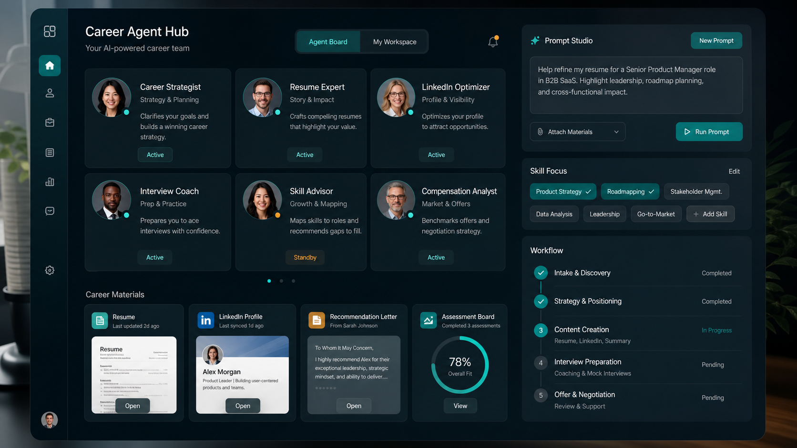

CV Council
Recruiter / HM / ATS / Coach
先選路線，再挑 agent。Resume-Mentor 會從你的 /skills 能力庫載入規則， 產生一段更懂履歷、LinkedIn、推薦信、適性測驗與證據缺口的專屬 prompt。

Recruiter / HM / ATS / Coach
Headline / About / Search Lens
Referee Voice / Credibility
Bias check / Role-fit / Drill
原本三個入口已經可以用，現在再加上 LinkedIn、推薦文與適性測驗；職缺選擇先做成灰色 teaser。
點一下就能看實際 prompt、challenge rules、review rules 與 success criteria，不是只有漂亮的名稱。
我們把目標、背景、agent council、skill pack、輸出格式與 guardrail 分開，讓使用者知道自己在調什麼。
先確定這次是 CV、LinkedIn、推薦文、適性測驗、面試，還是作品集。
產業、職能、年資、材料、語氣，一次收齊，減少後面追問。
每個角色對應到真實 skill，且所有規則都能直接打開看。
每一步都只問一件事，讓系統看起來更完整，但操作還是輕量。
先決定今天要處理 CV、LinkedIn、推薦文、適性測驗、面試或作品集。
把手上的素材勾出來，像履歷、JD、推薦人資訊、工作筆記。
每條路線都會帶出不同的審查角色與專家顧問。
先看分層預覽，再複製完整 prompt 送給 AI。
大約 3-5 分鐘，一次只問一題。慢慢來，這是為你一個人準備的。